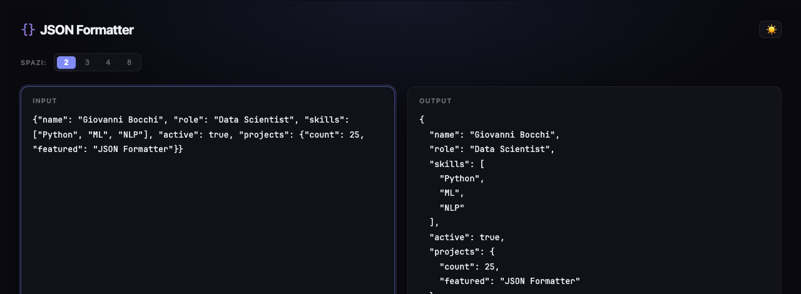

A clean, minimal web app for formatting and validating JSON, with inline syntax-error reporting.
JSON Formatter is a small, focused utility for pretty-printing and validating JSON: paste raw JSON on the left, get a formatted, indented version on the right, with any syntax error pointed out at the exact line and column where it occurs. It was built to be the kind of tool you reach for a dozen times a day without any friction — no sign-in, no ads, no unnecessary options.
The front end is a React + Vite single-page app talking to a Flask API over a single POST
/api/format endpoint. The backend does the actual parsing with Python's built-in
json module, catching JSONDecodeError and returning the message plus the
failing line/column so the UI can surface it inline instead of a generic "invalid JSON" message.
Backend language for the Flask API and the JSON parsing/formatting logic.
Exposes the single /api/format endpoint that validates and pretty-prints the
submitted JSON.
Drives the two-panel interface — input, output, indent selector, and theme toggle.
Dev server and build tool for the React front end, with a proxy to the Flask API during development.